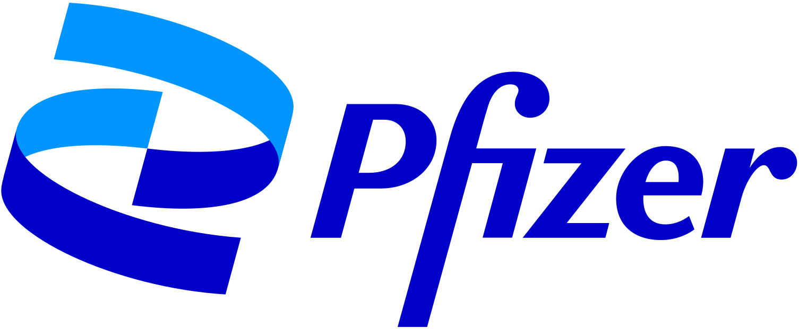
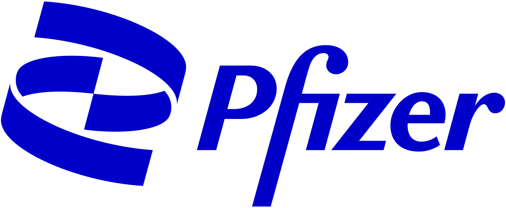

Lead Product Designer architecting systems that feel human, scalable, and meticulously crafted.


I am drawn to complex problems that demand both high-level systems architecture and an obsessive eye for edge cases. I don't just design screens; I design scalable mechanics that guide behavior.
"It's thrilling to work at the intersection of AI, data, and design — exploring how these tools unlock more human and highly scalable experiences."
My philosophy is to harness emerging technology not for its own sake, but to go beyond conventional boundaries. Whether it's using AI to rapidly generate prototypes or designing rigorous data structures, the goal is always to deliver experiences that feel effortless to the end user.
Precision and craft matter to me — a mindset shaped heavily by my years as a classical musician. The discipline of daily scales, the patience to interpret a complex score, and the attention to micro-details that elevate a performance from good to extraordinary — these principles directly translate to how I approach product design.

Hero Image Placeholder
This case study is currently being developed and will be available soon.
Designed digital solutions for professional services, focusing on client-facing applications and internal workflow optimization tools.
Additional project details and implementation specifics would be displayed here.
Available for meaningful collaborations and interesting conversations.